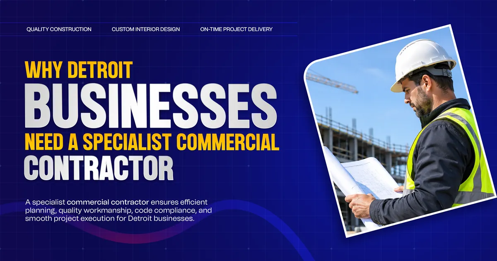
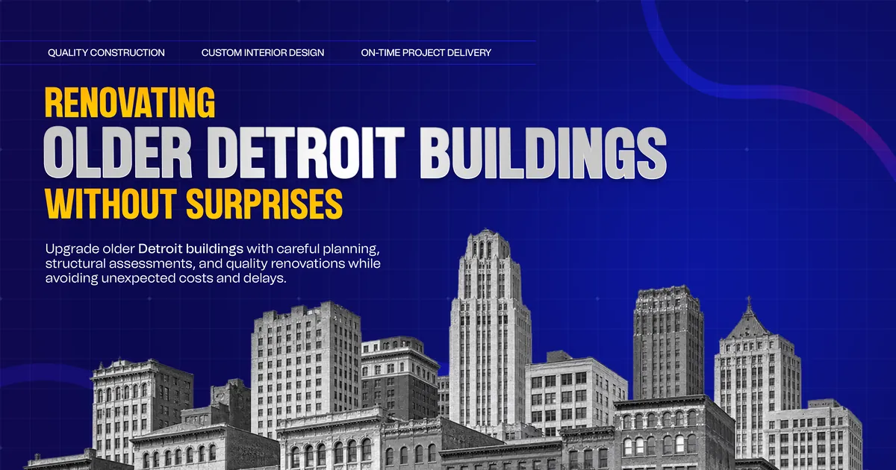
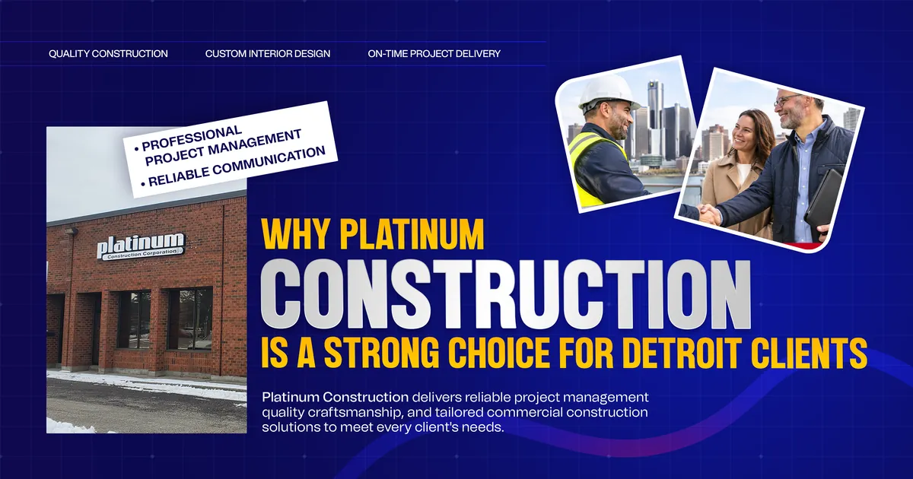
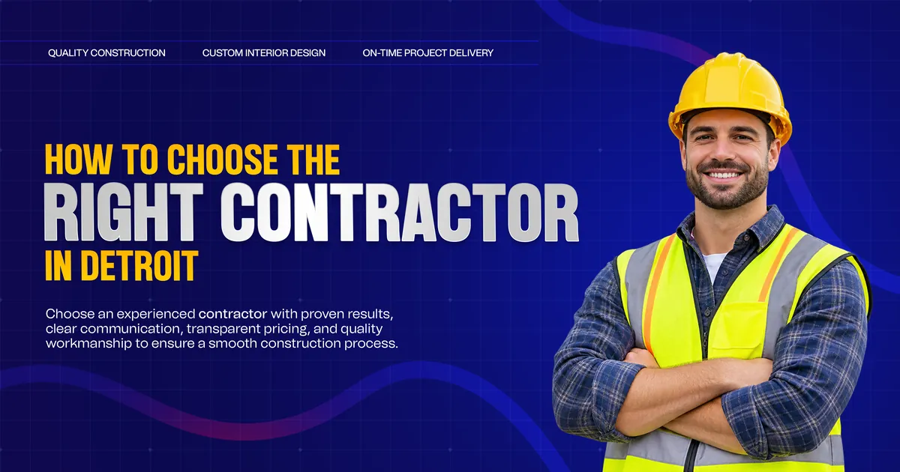

That energy creates real opportunity, but it also raises a practical question. Who do you trust to build the space? A salon, a restaurant, and a gym each have technical needs that go well beyond a standard commercial fit out. Choosing the right commercial construction company in Detroit can decide whether you open on time and on budget, or spend months fixing problems.
This guide explains what these three business types need from a contractor, how to plan the work, and how Platinum Construction supports clients who want a reliable commercial partner.

Why Detroit Businesses Need a Specialist Commercial Contractor
Many Detroit buildings carry history. Brick warehouses, older storefronts, and mixed use properties give a space real character, but they can also hide outdated wiring, aging plumbing, and structural surprises once walls are opened.
A commercial general contractor in Detroit who understands this reality plans for it from day one. They assess the building before pricing, flag likely problem areas early, and build realistic schedules instead of optimistic ones.
Commercial Construction Services in Detroit That Match Your Business
Different businesses stress a building in different ways. Here is how our commercial construction services in Detroit apply to the three spaces most owners ask about.
Salon Studio Construction
A salon needs dedicated plumbing for shampoo bowls, strong electrical capacity for styling tools, and ventilation that handles chemical fumes. Layout matters because plumbing locations are hard to move later. A commercial remodeling contractor with salon experience will lock the floor plan early and size the systems for real daily use.
Restaurant Construction
A restaurant combines food production, customer experience, and strict health rules in one space. Commercial kitchen work involves exhaust hoods, grease management, gas and electrical loads, floor drains, and washable finishes. Dining areas add acoustics, lighting, and accessibility planning. A commercial building contractor in Detroit should coordinate all of this under one schedule.
Gym Center Construction
Fitness spaces put heavy loads on floors, produce a lot of heat and humidity, and draw significant electrical power. Zone specific flooring, properly sized ventilation, and well planned change rooms are essential. Skipping these details leads to member complaints and costly upgrades after opening.
The table below compares what each space typically demands.
| Business Type | Key Construction Priorities |
|---|---|
| Salon studio | Plumbing for shampoo stations, electrical capacity, chemical fume ventilation, client friendly layout |
| Restaurant | Commercial kitchen systems, exhaust and grease management, health compliance, dining room finishes |
| Gym center | Impact resistant flooring, fitness grade ventilation, high electrical load, change rooms and wet areas |
Design Build and Construction Management Options
Some owners arrive with finished drawings. Others only have an idea and a lease. Platinum Construction supports both situations.
Commercial Design Build
With a commercial design build contractor in Detroit, design and construction sit under one agreement. That means one team answers for the budget, the schedule, and the result. Problems get solved faster because designers and builders talk to each other from the start instead of passing blame.
Commercial Construction Management
If you already have an architect, commercial construction management gives you a dedicated leader who coordinates trades, tracks costs, manages inspections, and keeps you informed. It suits owners who want structure and oversight without handling every decision themselves.

Renovating Older Detroit Buildings Without Surprises
Commercial renovation in Detroit often means working inside a building that has lived several lives. A reliable commercial renovation company will follow a clear process.
First comes a site assessment covering electrical, plumbing, structure, and mechanical systems. Next comes a written, itemized estimate that separates each cost category. Then comes permit planning, because commercial work in Detroit goes through the city's permitting and inspection process, and timelines vary with the scope of work. Finally, construction runs in a set sequence, with regular updates along the way.
Setting aside ten to fifteen percent of your budget for unexpected conditions is smart practice in older buildings. It turns a surprise into a manageable line item instead of a crisis.
What a Typical Project Timeline Looks Like
Every project is different, but the stages are consistent. Use this as a planning guide, then confirm dates with your contractor.
| Stage | What Happens | Typical Duration |
|---|---|---|
| Consultation and site review | Goals, budget, and building assessment | 1 to 2 weeks |
| Design and estimating | Layout, drawings, and itemized pricing | 2 to 4 weeks |
| Permits and approvals | City review and any required inspections | Varies by scope |
| Construction | Demolition, rough in work, finishes, fixtures | 2 to 5 months |
| Inspections and handover | Final approvals, walkthrough, documentation | 1 to 2 weeks |
Permit timing is the part owners most often underestimate. Starting early protects your opening date.

Why Platinum Construction Is a Strong Choice for Detroit Clients
Platinum Construction is a commercial builder with a proven track record in detailed, brand driven projects. Our portfolio includes completed work for Chipotle Mexican Grill, Starbucks, Edo Japan, and Tim Hortons across Ontario. These projects demand strict specifications, tight schedules, and consistent quality, which are the same disciplines that salon, restaurant, and gym owners need in Detroit.
Here is what clients can expect from our team.
We assign a dedicated project manager who coordinates every trade and communicates clearly.
We provide written, itemized estimates so you can see where every dollar goes.
We plan permits and inspections as part of the schedule, not as an afterthought.
We raise issues early and present options before moving ahead.
As a commercial construction company serving businesses across borders, we understand that every market has its own rules. We take the time to learn local requirements for each project and plan around them, so owners are never left guessing.

How to Choose the Right Contractor in Detroit
Whoever you hire, a few questions will tell you a great deal.
Have you completed spaces similar to mine, and can I see them?
Can I speak with past clients?
Is your estimate itemized and in writing?
Who will manage my project day to day?
How do you handle permits and inspections?
How do you deal with unexpected conditions in older buildings?
Clear, confident answers are a good sign. Vague answers deserve caution.
Frequently Asked Questions
What does a commercial construction company in Detroit do?
It plans and builds or renovates commercial spaces such as restaurants, salons, gyms, offices, and retail units, managing design, permits, trades, and inspections.
How long does a commercial fit out take?
Most projects take several months from planning to opening, depending on size, scope, and permit timing.
Do salons, restaurants, and gyms need different contractors?
They need contractors with relevant experience, because each space has unique plumbing, ventilation, and electrical requirements.
What is the difference between design build and construction management?
Design build combines design and construction under one contract. Construction management coordinates the build when you already have a separate designer.
Are permits required for commercial renovation in Detroit?
In most cases yes. Structural, electrical, plumbing, and mechanical work typically needs permits, and your contractor should plan for them early.
How can I avoid budget surprises in an older building?
Insist on a site assessment, a written itemized estimate, and a contingency allowance of ten to fifteen percent.
How do I start a project with Platinum Construction?
Visit platinumconstruction.com to request a consultation. We will review your goals, space, and timeline.
Final Overview for Construction Service of Salon Studio, Restaurant and Gym Center
A successful salon, restaurant, or gym starts with a well built space. The right contractor listens first, plans carefully, communicates openly, and delivers a finished project that works from day one.
If you are searching for a commercial construction company in Detroit, Platinum Construction is ready to talk through your project and help you build with confidence. Visit platinumconstruction.com to start the conversation today.